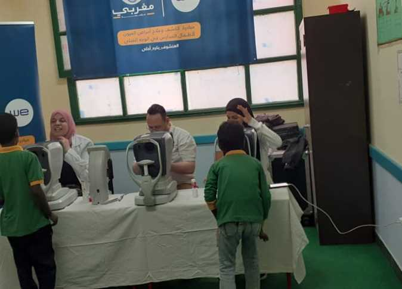

محافظ أسوان يوجه بتذليل العقبات لإنجاح «قافلة العيون» لتلاميذ المدارس
وجّه اللواء أشرف عطية، محافظ أسوان، بتقديم جميع أوجه الدعم والمساندة لإنجاح فعاليات القافلة الطبية للعيون لتلاميذ المدارس الابتدائية والإعدادية بمركزي أسوان ونصر النوبة، ومنها توفير سيارة مينى باص لنقل التلاميذ لمقر تمركز القافلة الطبية، والعودة بهم إلى مدارسهم بعد توقيع الكشف الطبى اللازم، مشيرًا بأن ذلك يأتى في إطار التعاون المستمر بين المحافظة ومختلف مؤسسات المجتمع المدني والجهات المعنية من أجل تكثيف الجهود المبذولة لتنفيذ التوجيهات المتواصلة للرئيس عبدالفتاح السيسي من أجل الارتقاء بالظروف والخدمات الصحية والاجتماعية والاقتصادية وغيرها من الجوانب اللازمة لتحسين الظروف المعيشية وتلبية المطالب والاحتياجات لتوفير حياة كريمة للمواطنين والأهالي وخاصة في القرى والنجوع المستهدفة للمبادرة الرئاسية (حياة كريمة).
وأوضحت الدكتورة هدى مصطفى، مقررة فرع المجلس القومي، في بيان، الاثنين، أن القافلة الطبية للعيون يتم تنظيمها تحت رعاية محافظ أسوان وبدعم من مؤسسة المغربي الخيرية للعيون وبالتعاون مع مديرتى التربية والتعليم والصحة، بالإضافة إلى فرع المجلس القومي للمرأة، مشيرة إلى أن القافلة تستمر في الفترة من يوم 9 وحتى 13 من الشهر الجاري، وتستهدف توفير إجراءات الكشف الطبي لمتوسط عدد 500 تلميذ وطالب يوميًا حيث يتم فتح ملف طبى خاص لكل تلميذ يتضمن قياسات للنظر وغيرها من التقارير والإجراءات الصحية اللازمة للحالات التي تحتاج إلى عمل نظارات أو إجراء عمليات وتدخلات جراحية مناسبة، علاوة على الأدوية والعلاج الذي يتم صرفه بالمجان من الصيدلية المصاحبة للقافلة.
وذكرت أن أماكن تمركز فعاليات القافلة الطبية للعيون داخل مركز أسوان تشمل مدرسة 23 يوليو الابتدائية بقرية أبوالريش، ومدرسة عزبة النهضة الابتدائية بمنطقة عزب كيما، ومدرسة عبدالمالك عوضون الابتدائية بمنطقة السيل الجديد، وأيضًا مدرسة الرائد يعقوب الابتدائية بقرية غرب سهيل، بالإضافة إلى مدرسة قسطل بقرية قسطل بمركز نصر النوبة.